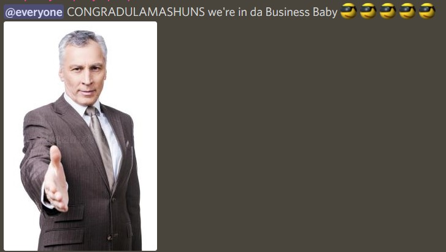

2022
29th night of july
i was time traveling to explore old media events and the last one i got to was Dragon Ball: Super, a bad CGI dragon ball movie from 2002 that looked terrible and shared the name of the yet to come actual DBS manga and anime (thats real you can watch that) and for some reason every single one of these media events was in an attraction at Disneylands Adventure California and you had to go thru a ride line and everything. naturally it always looks like the indiana jones line. i get to the end of the line and its just doors into a terrible thrift shop called Dragon Ball 256-1 and there's a picture of Peter Capaldi doing a dragon ball pose of some kind beneath the title of the store. inside is just like usual thrift store stuff but also i found a switch game called Sunshine 2 + 3 Anniversary edition which was just some bizarre bootleg fake sequel bundle to mario sunshine
6th morning of june
teh dream was taking place in third person like a video game and an avatar that didnt look like me but i felt was sneaking around some very videogamey level mansion with blue light pouring in the windows so it was visible despite being night (you know for like level design purposes) and i was avoiding the security bots from fnaf security breach and wanted to grab this hand gun i saw on the ground so i could just shoot them, but unfortunately the stalker was another player and came in the room and i had to hide (because its an asymmetrical multiplayer horror experience naturally) and i hid in a cabinet but instead of closing the doors to this armoire i hid in they doors just disappeared but my model also derendered? so i was like ok maybe im fine and i think i said over voice chat or something "i think the games broken" and then the stalker shows up and looks vaguely like a slightly buffer markiplier drags me out of the armoire says "yeah i think so too" and then ya know eats me whole
27th night of may
i was pretty
21st night of may
the central conflict of it was that my tooth was infected (this is like real gross i wouldnt if you havent eaten breakfast yet) it was kinda like a zit the diameter of the tooth that got more swollen and red throughout the dream but it was like dented in the center with this black rot attached to the root, i impulsively scratched at the rot and it came off easily but then out came like tendrils the color of puss and they grew for a bit before settling into a position and falling out, after that it just leaked a very watery substance still the same color, and eventually it was empty. the whole time the tooth and puss tasted like blood
once i got that fixed i was just trying to use my phone to keep fnaf characters away in a version of the fnaf 4 bedroom, then i finally got to this site i dreamed up but springtrap was at the door so i got up and shut him out, scheduled my appt at the dentist, the lights turn on and everything changes to yellow happy colors and it's morning time, springtrap is still there but he's the mascot for the dentist site now and a completely different design, he picks me up with one hand and throws me into a mcdonalds sandwich box in his other hand that glowed on the inside and was filled with trash and i wake up
15th night of may
jack and i were at a future hotel and im now realizing originally jack was ryan
at some point they switched places
but we were at a nice hotel with a bit of impossible dimension and architecture to it but it wasnt too bad
it was also a fancy dam
at some point we were trying to cross a calm part of the water flow through the hotel really high up on the like 40th level
and i dunked my head underwater and saw lugia
and suddenly i was playing pokemon snap
automatically got swept up in the rollercoaster like situation pokemon snap is
then came album review tho
and i got embarrassed bcuz i didnt want jack to think i was horny for the pokemon i was taking pictures of because some were saucy
then i noticed theres non pokemon snaps on the album and i had fnaf concept art in the album and the seamless switch to watching a fake fnaf development documentary im my head with steve jobs voice as the voice of scott cawthon explaining his vision
10th night of may
dream alix has a huge dick,
thats all thanks
29th night of april
i dont know how@i can conject the start of it where i couldnt go to the mall because i had to meet my family at ahuge extended family gathering in an ikea like furniture filled warehouse and to my surprise i met alix there and we found out we were like 3rd cousins and then they tried to kiss me in a fake ikea kitchen i pushed them off and they laughed a lot and turns out they took ryans shrooms before coming and then somehow we got stuck on a passenger airliner that took off on its own and i was pissed because there was no way we'd make it to the mall in time now
skip ahead even further (because i don't remember what happened between this) and turns out the worlds ending in 3 days thanks to a meteor hitting japan and me ryan and a random dude ryans dating are like in a bar in tahoe when the news hits and everyone in the bar decides to spend the night there, ryan suggests we make it to his parents house on foot (????) we agree (????????) we spend the night at the bar and move in the morning, its snowing hard on foot was a bad idea, but we make it to my house first which is kinda useless because the powers out because of the storm (very normal and lifelike /srs) but we grab supplies and i stock up on meds including HRT which is there for some reason lol
THEN HARD SCENE SHIFT im at a huge fancy ass baseball stadium with my mom and brother i want nice boots so i can hike to ryans house better, which my mom doesnt think we'll find at a baseball stadiums but we look anyways and it turns out there's basically a walmart in the stadium right past the wingstop and we find tons of shoes and then we find boots advertised as antimagnetic we say huh that's dumb and it just ends
4th night of february
this dream invented weather phenomena turns the sky dark orange and features a 40ft diameter column of spiraling black smoke at it's center
also the dream airport has very slick floors that made me tackle Shannon when i ran to hug him after not seeing shan in awhile
the dream airport also provides flying white leather futons for transphobic parents to stand on so they can talk to both their trans kids refusing to answer if they have tape so i can load this final box onto the plane until i walk over the droor to find and use a mix of electrical and packing tape so they can then laud me for doing something independently and fly off to the airplane while i can hear them continue to be transphobic behind my back with magic hearing before someone's like "oh yeah isn't there supposed to be a halidrome tonight" and then the stewardess is informing my parents that yes there will be a halidrome on the tarmac in a moment but it's perfectly safe since we'll be half landed (plane resting diagonally with one wing and the opposite land gear supporting it) and psychological evaluations considered the halidrome to be less traumatizing than a tornado, immediate jump cut to a wide shot of the tarmac as the halidrome is in full swing over a white and green airplane, feel deep dread and a modicum of release and then wake up
23rd night of january
my older cousin remotely coaching a HS cheer team in my grandparents living room and the team was advertising a gay bald pastors chicken wings in the football stadium
2021
26th night of november
had a dream i joined the navy and i was at the helm and captain rlly liked me but for some reason he was commanding from the lower decks over discord vc and the size of the boat was constantly changing
at one point we submerged and grenades were thrown on top of us
i couldn't see anything while submerged but i could see warthunder damage thing in the bottom left lol
at some point i was like "wow shannon would love this"
anyways i made the ship take flight and i didnt realize that was weird till i woke up tbh
we snuck thru a window to flank them
the environment changed from like off the coast of india to in just some room
was now piloting flying battleship with insane manuverability
was going good till i went into room with anti aircraft missiles n we went down
but that wasnt the end because the boat grew like 8 really big wheels and i had to drive us out
unfortunately the boat was like shaved down from all the gunfire until it was just me on a chair and a steering wheel
i abandoned what little was left of the ship and it turns out I'm actually an avatar of scout tf2
all of the enemies just on the ground are tf2 characters and theyre also not moving and i died to a Heavy wearing a gibbous a beard and sunglasses next to a sniper in the same outfit
they didnt move either just shot at me lol
anyways once dead i took off the vr goggles because apparently the entire thing was virtual navy but real like enders game or whatever
the end wow weird ass dream
oh and most of the dream really was just walking around on the deck waiting to see if anything would happen because we didnt know if the enemy would actually be there
i just kinda talked on dream discord for most of the wait lol
finally when i woke up and was looking at my task bar on my pc (that wasnt running windows it was like future OS) there were multiple icons for apps called linux runtime and every icon was a sparkle dog furry head
3rd night of november
first woke up in own bed but dream to old lady masturbating over my feet and she ran out but she'd also removed every door frame in the house so i couldn't close the door to keep her out, went back to sleep then woke up in metal sports stands to play with a band comprised entirely of my family, i really didnt wanna play was too depressed, walked to the exit at the end and went from outside of stadium to disneyland, then i was at the disneyland elevator that takes you down and out of the park because apparently Disneyland is a mile in the sky, there were two grimy showers in the lobby for some reason and i found two mice i caught there, when i got home it was my childhood texas house and i setup my two new mice with a terrarium that was def too small but they had rc tanks and then i was just dreaming from their point of view
28th noon of october i played baritone really fucking good and that's all i remember so naturally i really wanna bite into james from team rocket and it turns out he's the consistency of a gummy bear
15th night of october
was flying hundreds of feet in the air with a kite and then fell into a giant tree where i land on a branch and it bends down to the road, i then meet a hot milf who kidnaps me and i just kinda vibe at her place for awhile but then i wanna get out so i go inside a bathroom then when i open it again she's just suddenly standing next to the doors waiting for me grabs my neck and points a knife at me and i epic take the knife from her but then she's like "darn was hoping we'd get a little closer first" and before we make out i wake up
15th night of september
a Tinkerbell show had a "we're all gay!!!" episode and the show runners had a special behind the scenes segment where they were like "theyre all gay!!! also we're gay too!!!!!" and they showed off their OTPs and were like "watch to see which ship is canon!!"
13th night of september

5th night of july
what if Patrick Bateman tried to kill me and steve urkel in a police station and started to gut urkel like a fish and the escape route was mario sunshine shine sprite i had to ground pound onto but then i was like wow i dont wanna be in this dream anymore and i woke up
20th night of june
nothing except me thinking, i was just kinda anxious and full of dread and asked from my head "haha hey ghost are you doing this" but nothing happens. then i think "maybe its the holy ghost, hey god" and the dreams scene isntantly transitions from nothing to just blinding light and a noise i can only describe as full and terrible
i woke up immediately
2nd night of june ginger was telling me about her crystals and their properties while we delt with supernatural goings on in the house i grew up in
20th night of may
stayed up late watching brendaniel randomly secret stream d2 and had dreams about drinking canned air
8th night of may
i was in a frog costume and did a flip but i only saw myself in third person and felt overwhelming dread
30th night of march jeff bezos left amazon to transition and was standing outside a supermarket to see if anyone still recognized him
2020
11th night of december
there was a rlly big bowl of kix cereal and it looked dry but there was just like a dry layer on top and then it jjst kept going down infinitely with milky kix
26th night of november
character is quietly crying on the ground
clown enters
"hey kid huehuh!"
kid looks up
"what is.. a zub zub?"
kid sniffles and wipes its nose with long sleeves
"um... idk mister"
clown makes weird self satisfied laugh snort sound
"its a *snickers* a BEE, flying BACKWARDS"
clown loses it laughing while the kid goes back to greiving like moans and cries
21st night of november
i was in highschool again but skinny and i never moved from texas
i was cis and the teacher was singing christian music while handing out a test
29th night of october
remembered that the way my dream woke me up today was bizarre totally impossible earthquake stuff where the earth just fuckin split open super wide and this guy in a purple shirt keeps falling in and falling apart like he was being held together by paper and spilling obscene ammounts of blood as the wall of earth was just racing towards the ocean and purple shirt guy kept fallin in and dying and then i tried to remember how i got there and I'm pretty sure i was trying to play dead or alive on the og xbox with tifa from ff7 and now i jist remembered that i had just gotten it at the gamestop and i hap previously shoplifted a gameboy advance sp from this gamestop in another dream and this time i slapped on the counter and apologized and the cashier was furious but said if i caught him 701 unique pokemon i could keep it
26th night of october
it started as a dream where it was just like a brain video of a made up hbomberguy video making fun of the creator of a historical rankings website cause he's racist and bigoted or whatever and that part was actually very entertaining and the guy was making his defense videos in minecraft and doing it really poorly and his outro was a minecraft title being displayed but he made the redstone timer on the command block way too short, so hbomberguy fixes it and makes an example where its longer, then he makes a funny one where its extremely long and walks around this minecraft house in the nether (which is where it was the whole time) and eventually stops on steve sleeping on a minecraft bed where the title is supposed to popup, but instead the bed gets like shitty blender special effects where it has a wave modifier added to it and stuff like that, and at a certain point it had zoomed out to reveal classic sonic was doin this or whatever, and then eventually everything went into black and white wireframe with a black background and sonic was patting steve on the back really really fast, there was some spooky dialogue that popped up in just block lettering and then sonic started patting his head, it was adding little X hitmarkers all over, then sonic(whos not even really sonic anymore its just a hand) added just a real body but it had like a visible xray skeleton, i really thought that i was still gonna make this a funny dream and that it was surreal but i think i need to pee so dream turned for the worse at this point and the limp human body started to have the back of its head flattened, steves was morphing a lil bit too but i think it was really just turning into a normal human head with its back flattened, pat hand then asks in the block letters if they like it and then it goes back to patting but now its the top of their heads and thise get flattened too, asks if they like it again then declares their finished, then the patting starts back up again suddenly after a few seconds of nothing happening and lil devil horns are made on the brow of each head (now just skulls) and probably brain made up spooky sound or something and i woke up finally
20th morning of september
im trying to take a nap but wake up at noon and all i see when i close my eyes is a bunny boy with a humongus ass and i dont know where he came from or why hes in my head
hes a white rabbit with blonde short-medium lentgh hair and has a blue tshirt and also hhe has a fat pussy and sir i just wanna sleep
6th night of august
the only thing i remember was a twitter acct where this girl only tweeted destiny 2 lore and boob pics
4th night of july
had a dream that im still thinking about where i saw a tweet on twitter saying "heres a cheat code for a secret ending for avengers endgame featuring marvel zombies antman secret" and then of course i go do it and theres some ant man running away for a bit but then he turns into big mode zombie guy and he nearly eats hawkeye but then a fucking collosal titan version of him rises from the earth mouth open to swallow both the smaller version of himself and hawkeye and he pulls himself out of the earth to wreak havoc and then once hes out it zooms into the giant zombie antmans head and its the angry video game nerd but hes been zombified and hes also giant and hes like the cyclops in homers odyssey and there's a cage of people in the back of the room while he holds a generic brunette damsel in distress while playing a video game and then i think he gets mad and drops her and she dies and he goes "aw banana shit muffins now i gotta clean this up" and then the world just ends and the movies over and somehow the dream still isn't done i go back to twitter and say hey that was cool and then the person that tweeted the original is in my room and theyre like an anthro lizard person and their pfp is them with someone else on a pink tree branch just like floating in the clouds and im like "holy fuck it was you all along" and then we're all hangin on the tree branch in the clouds together and its a happy ending (???)
1st of june
was sucking my own dick B)
i was also married to an evil plant at one point that had big tentacles with spikes at the end but that was only a moment and it was over
26th night of may
Quinton reviews wrote a book and i watched a video he made about it and these two giant spiders occasionally patrol my bedroom walls now and Quinton never says it but by innate dream knowledge they're there so that i can't give his book a bad review
and for some reason part of the dream towards the end was knowing this is a dream and not knowing its a dream and part of the knowing was that "oh yeah this is a recurring nightmare" but then i actually woke up and realized wait no it fucking isnt ive never had this dream before
21st night of may
lump in my foot
3rd night of may
was with the old racist family friend lady and she had the Apple Table Pro and it made no sense and there was a tiny pc on it with a little screen on the front and i was like "this looks like a nintendo wii" and it was an advanced ninteno wii and the screen on the front popped up the wii logo and i was like wooooooaaaaaaaaa
30th night of april
cut off the tip of my thumb to make sure it wasnt sausage inside, and it was, but i just put a band aid around it and it was fine and worked again
19th night of april
linus tech tip showed up at my house because he needed info about the Retron5 so i just began telling him everything about it for awhile and at some point he put halo into my og xbox and played while i talked
18th night of april
i was living in a dorm and everyone got bored so we rigged a door to spray acid on people and no one cared
22nd night of march
as early as i can remember deatails i was ghost observing a group stopping a jet that a terrorist was flying with tons of explosives so the good guys were following with their speedy small jet and the person leading was iron man, so he was like "fun fact big jets dont swim well" and then he cut off a tiny little piece of the tip of the tail and it plummeted down and didnt explode but didnt come back above the water and was instead just continuing under the water, however iron man was now piloting the good guys jet and decided to show off how little jets do swim in water well and he was popping it up and out of the water like a dolphin but the terrorist jet was still going and we were just following, it eventually beaches and it's become a big black sperm whale and iron man lands next to it and is just like o fuck she gonna blow and then flys away,
now naturally this beach is right in the quad of my highschool and I am now standing in it and I run behind a wall to take cover, i see one guy just kneel with his back to the whale like right in front of it and cover his head with his hands and other people hide behind random pillars and then the whale explodes
the explosion nearly crushes me as the wall falls but its caught by another wall and i run out and my first goal is to find all my friends and my sisters and their friends and get them to my dads truck so i first run into annoying girl that had a crush on me and then my ex and im like cool lets go and then i just run into everyone else in a group and im like cool so we run through this hallway and out a door and its nighttime now while before it was noon,
so we dont see my dads truck at first and hes the getaway driver in his truck, we run around a bit and find him and then half of the group doesnt see him and runs further along but the half im in is like o there he is and gets in, so my dad starts backing up to go get them and he eas doing it for a really long time and i was like "whats up lets go" and he responds "well i cant reach the gas pedal" and thats when i realize that actually im behind the wheel
from this point on i floor it and everything controls and feels like am arcade racing game and i shoot past them really really far and i have a really hard time turning around and then i eventually get back to them after some shoddy racing and then it just ends
27th night of january
was endlessly driving on a highway and then spun out from exhaustion and then just cried until i woke up
2019
31st night of may
i accidentally caught the attention of these 3 old ladies that look like trevor henderson monsters but the biggest ones only a foot and a half tall and the the other two are smaller and they arrived in a line in order of height and i couldn't stop them and for some reason i knew they were coming to eat my hair
and they pushed me down climbed on my head
and they ya know ate my hair
2018
5th night of october
i was at first running around a fusion of my grandparents house and my old big church and ive been to this exact same dream scape before but it had some additions like a front door and a garden, it went from running around exploring it with my siblings and cousins to trying to find a serial killer to then a slasher fic eque sequence where im holding the killer back with a chair and then i just woke up, picked up my phone and saw a meter go to 30% sleep and then turned to my right and a friend was there and he was just changing his clock to random times and then changing it back
16th night of september
a wasp flew into my ear and i heard it biting, stinging, and writhing in my ear